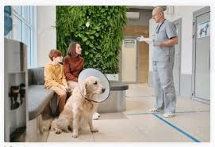
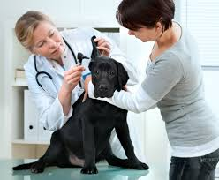
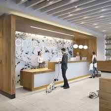

Há 4 anos cuidando com carinho e amor do seu pet
O Centro avançado de especialidades veterinárias Lara & kira, inaugurado em janeiro de 2020, nasceu da ideia de reunir diversos profissionais com especialidades distintas, afim de promover tratamentos modernos e seguros para nossos pacientes. Aqui somos uma família, possuímos mais de 18 médicos veterinários que dedicam suas vidas para oferecer a melhor experiência no cuidado com seu pet, com a missão de promover a ética profissional, o bem-estar animal, muito carinho, amor e satisfação de nossos clientes.
Nossos colaboradores possuem experiência nas diversas áreas de atuação além de serem habituados e treinados em lidar com nossos queridos Pets.
Contamos com uma completa equipe interna de enfermeiros veterinários e médicos dedicados integralmente, 24h por dia, inclusive domingos e feriados, para melhor atender as necessidades dos nossos pacientes.
Colocamos uma estrutura moderna e ampla, com equipamentos à disposição da saúde de nossos pacientes com preços acessíveis a nosso público e localidade, preservando a ideologia de nossos fundadores, os médicos veterinários Dra. Laís Josefa e Dr. Hartur Nunes, que é buscar oferecer um tratamento diferenciado e transparente.
Missão
Proporcionar serviços que objetivem saúde e bem-estar aos nossos pacientes (os animais) e satisfazer as expectativas dos nossos clientes (os proprietários dos animais).
Visão
Ser reconhecida como uma empresa referência na área clínica, cirúrgica e de especialidades na Medicina Veterinária de pequenos animais. Valores/Princípios: ética, honestidade, transparência, atualização técnica, comprometimento, profissionalismo, excelência em atendimento, respeito e amor aos animais.
|  |  |
|  | |